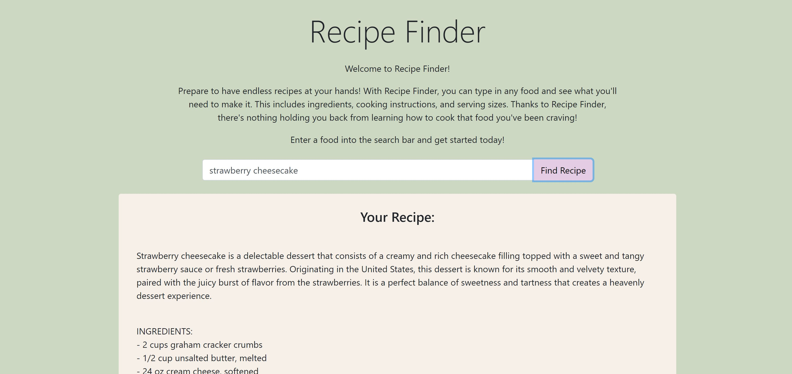
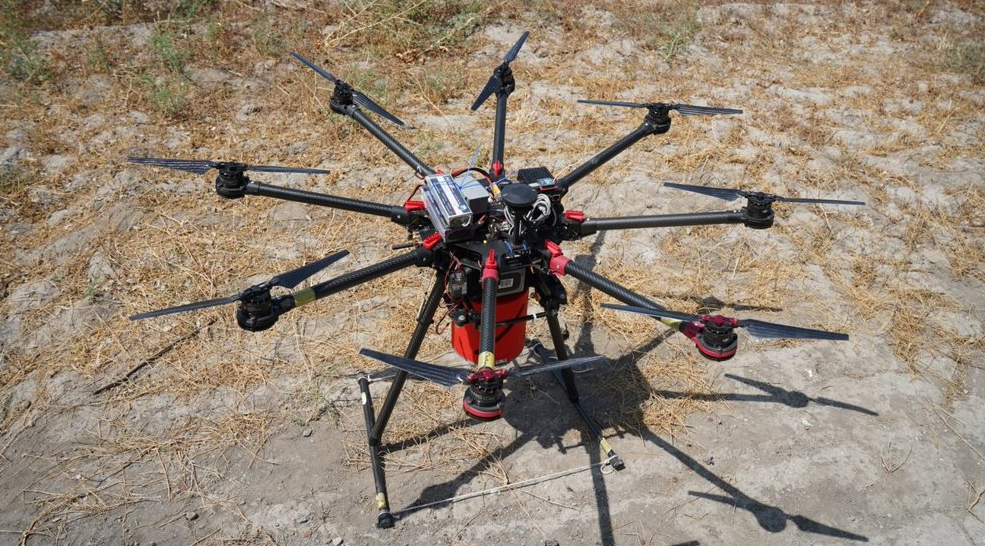
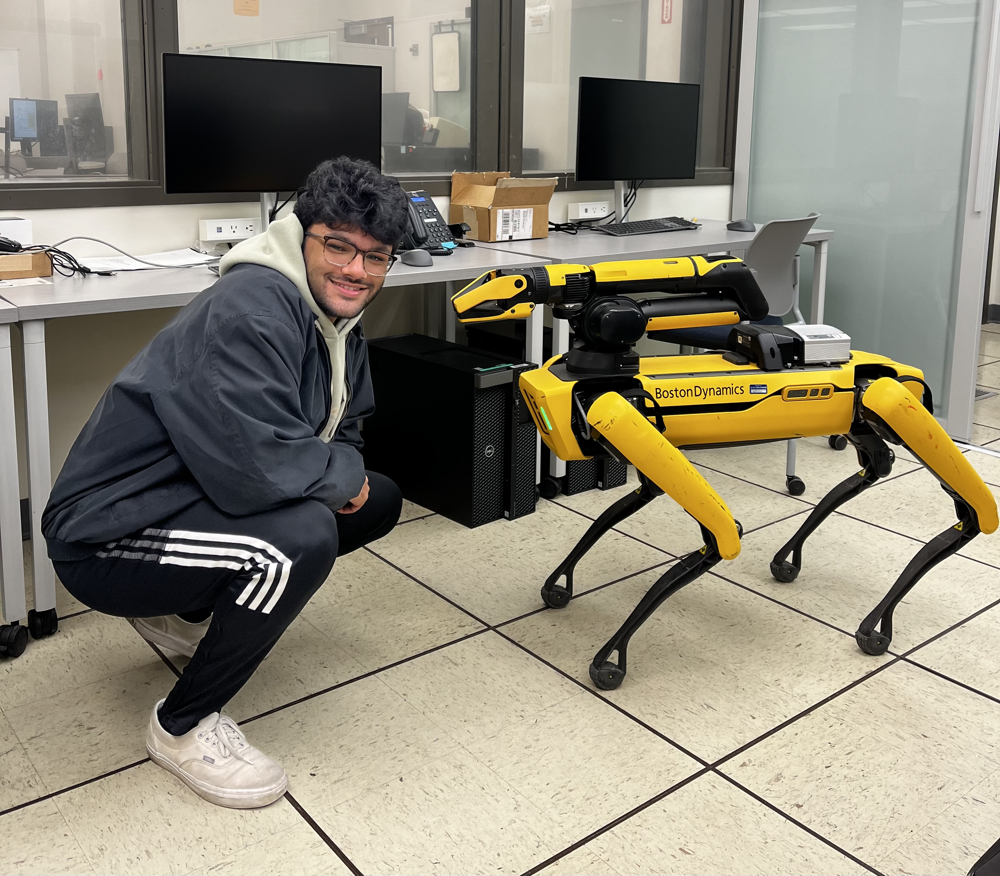
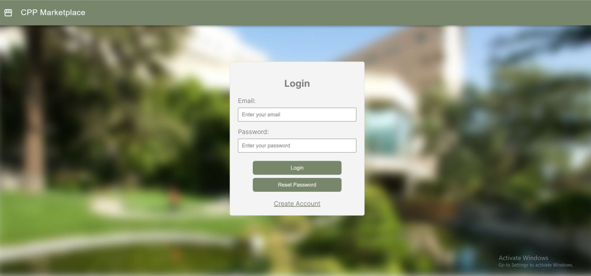

Welcome to my personal website!
My name is Samanyu Satheesh, and I'm a software engineer. Thanks for taking the time to visit my page! Here's a little about me:
Born and raised in Mountain View, California, I grew up in a diverse community surrounded by the cultures of the South Bay. I completed my BS at Cal Poly Pomona, majoring in Computer Science, where I graduated Summa Cum Laude in 2024.
I currently work at eGain as a Solutions Engineer, where I help refine and build upon our core products as a SaaS company. I work with various cross-functional teams to support our products and build trust with customers.
In my free time, I love to play the drums, listen to music, work out, watch football, and eat food. I enjoy spending time with friends and family, as well as learning new things. I'm currently learning more about machine learning and its applications in healthcare.
You can scroll down to see some of my recent work!
Recent Work

College Recommender App
During my internship at PM Accelerator, I collaborated on a full-stack college recommendation
platform that helps users find schools based on their academics and interests. We designed the React
frontend for a smooth experience and contributed to the AWS-hosted backend with custom APIs,
real-time search, and compatibility scoring.

AI Recipe Generator
I developed a web application that generates a recipe for any meal as well as a summary of the dish, ingredients, serving sizes, and step-by-step instructions.
I used Flask for the backend and leveraged the OpenAI API for integrated prompting.

UAV ML Fire Detection
I collaborated on the Lockheed-Martin Fire Detection Project at Cal Poly Pomona, leading the ML team
to train a model capable of identifying fires and smoke. We trained a YOLOv8 model using a few thousand images
to achieve an accuracy rate of 80%, and I presented our findings to Lockheed-Martin engineers at the
College of Engineering Research Symposium.

Boston Dynamics SPOT
I worked on a research project utilizing the Boston Dynamics SPOT robot to perform
autonomous package deliveries. SPOT was programmed to identify a package, retrieve it, and navigate its way
to a delivery destination using fiducial markers. We presented our project at the College of
Science Research Symposium as well as at an Open House showcase for new students.

CPP Marketplace
At the 2024 Cal Poly Pomona BroncoHacks, I collaborated with a team to develop a full-stack
campus-exclusive marketplace in under 24 hours. Built with Next.js, React, TypeScript, and
Material UI, the platform supported user authentication, item listings, and filtered search,
with Firebase powering real-time cloud data storage. This experience strengthened my skills in
web development, teamwork, and rapid problem-solving.
CUDA GPU Computing
In my senior year, I studied the NVIDIA CUDA programming language, learning how to harness the
massive parallelism of GPU architecture to accelerate complex computations. Developed in CUDA
and tested on systems at the National Center for Supercomputing Applications (NCSA),
I learned to optimize performance for real-world data-heavy tasks like Convolution and Pooling,
techniques used in Machine Learning.

{kind=link}
{kind=link}
{kind=link}
{kind=link}
{kind=link}